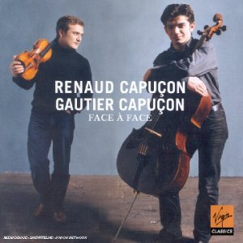

Fnaczak
zaterdag 22 november 2003 | Kultuur
Ik zal het de Sint niet kwalijk nemen als hij mijn kous overslaat, want ik heb mezelf de laatste maanden alweer afschuwelijk verwend op muzikaal gebied. Onderaan zie je het lijstje van mijn nieuwe aanwinsten (allemaal legaal natuurlijk, want op het net is er geen moer van te vinden).
Gisteren was ik in de Fnac aan het grasduinen tussen de genomineerden voor de Klara Muziekprijzen. Persoonlijk vond ik de lijst van vorig jaar indrukwekkender, al kon ik er opnieuw een paar juweeltjes uit vissen (de twee eerste cd’s uit het lijstje). Aan de luisterpost werd ik haast uit mijn sokken geslingerd door Face à Face van de gebroeders Capuçon uit de categorie kamermuziek. Op hun verzamelalbum brengen ze een selectie hedendaagse duo’s voor viool en cello. Het gaat er behoorlijk heftig aan toe bij momenten, maar steeds vlijmscherp en hoogst vakkundig. Ik vermoed toch dat ze na elke speelbeurt een nieuw stel snaren mogen spannen. In ieder geval: volgens mij kan je dergelijke klanken alleen uit een instrument halen als je het door en door kent.
Ik heb een
Audio clip: Adobe Flash Player (version 9 or above) is required to play this audio clip. Download the latest version here. You also need to have JavaScript enabled in your browser.
(MP3 – 1,5 MB) geïsoleerd voor de geïnteresseerde lezer van Eric Tanguy (1968) gespeeld door de Capuçons. Als je niet vertrouwd bent met deze abstracte muzikale vormen, verschiet niet! Je vergelijkt ze het best met de gedichten van Paul van Ostaijen. Dat is ook even wennen in het begin…
- Cipriano De Rore – Missa Praeter rerum seriem
Huelgas-Ensemble olv
Paul van Nevel (Harmonia Mundi) - Renaud & Gautier Capuçon – Face à Face
Audio clip: Adobe Flash Player (version 9 or above) is required to play this audio clip. Download the latest version here. You also need to have JavaScript enabled in your browser.
Duos for Violin & Cello (Virgin)
- Anton Dvorak – Quatuors et Quintettes (3CD)
Quatuor Talich (Calliope) - Utopia Triumphans
Huelgas-Ensemble olv
Paul van Nevel (Sony) - Janácek e.a. – Sonate pour violon et piano
Isabelle Faust & Ewa Kupiec (Harmonia Mundi) - Musica Britannica
Uman Consort (ORF) - Stefano Landi – Homo fugit velut umbra
L’Arpeggiata, Christina Pluhar (Alpha) - Janácek, Messiaen & Prokofiev – Piano Music
Severin von Eckardstein (DG Scene) - The Coronation of King George II (2CD)
The King’s Consort olv Robert King (Hyperion)
